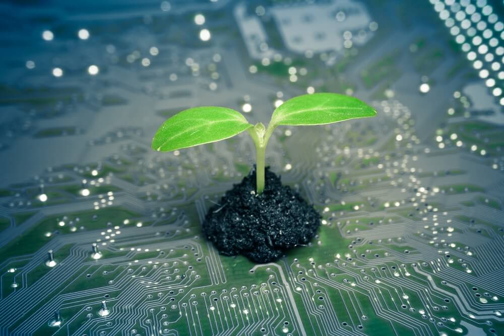

Somos alunas da Universidade Federal de São Paulo – Instituto de Ciência e Tecnologia (UNIFESP-ICT) e desenvolvemos este site como parte do projeto de extensão da disciplina “Tecnologia e Meio Ambiente”, ministrada pela professora Maraísa Gonçalves.
Este site tem como objetivo não apenas cumprir o papel de um projeto acadêmico, mas também oferecer um complemento interativo aos vídeos publicados no YouTube (Assista aqui). Esperamos que, por meio desta plataforma, os conceitos relacionados à reciclagem sejam fixados de maneira clara e envolvente para todos os visitantes.
